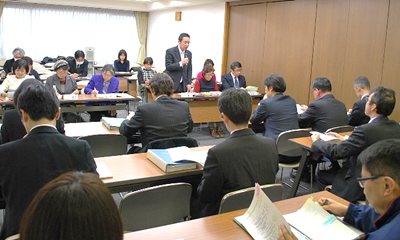

|
|
第53回埼玉県消費者大会実行委員会 1月12日(金)13時30分よりさいたま共済会館501会議室にて、埼玉県と第53回埼玉県消費者実行委員会との懇談会が開催されました。埼玉県から18人、実行委員会から14人(8団体、事務局)が出席し、要請書から抜粋した各項目について埼玉県より口頭で回答があり、回答を受けて、要請項目の理解を深める発言や、質疑応答をおこないました。 1．あいさつ ＜埼玉県県民生活部消費生活課田中課長＞ 第53回消費者大会に多くの消費者団体のみなさんが参加されました。最近の消費者被害では、高齢者のインターネットに関する相談が多く、悪質事業者の取り締まりに行政がしっかり取り組んでいきたい。また、行政と消費者団体との連携が欠かせない。消費者市民社会の実現に向けて、本日は率直な話し合いをしていきたい。 ＜第53回埼玉県消費者大会加藤実行委員長＞ 第53回埼玉県消費者大会の実施にあたり、埼玉県より知事の挨拶はじめ様々なご支援をいただいたことに感謝いたします。今大会の要請書は、4月から始まり6回にわたる実行委員会の中で、私たちをとりまく社会情勢を学習しながら、創り上げてきたものです。格差と貧困の問題や核兵器禁止条約など平和な暮らしを作っていくために、一緒に考えていきたい。 2．要請書について概要説明(岩岡宏保大会事務局長） 大会基調報告内容から要請の要因となるくらしの背景・社会情勢をもとに、前半｢平和・核兵器廃絶｣｢消費者課題｣｢食・食の安全｣、後半｢医療・福祉｣｢環境・くらし全般｣｢教育・子育て｣｢復興支援・防災・減災｣について説明しました。  3．埼玉県の回答 岩岡事務局長の概要説明の後、要請事項の抜粋した16項目について、担当課からの口頭回答がありました。なお、すべての要請書項目に関する回答は、のちほど文章で回答が送られてくる予定です。 4．質疑応答 埼玉県からの回答を受けて、要請項目についての理解を更に深めるために、消費者大会実行委員会の参加者から発言をおこないました。発言した項目と内容の抜粋は次のとおりです。 ｢平和→戦争体験・被爆体験の継承、埼玉県平和資料館の資料の活用などについて｣｢消費→消費者被害防止サポーターの活用方法について｣｢食→食の安全に関するHACCP導入の課題について、ジビエの拡大、狩猟時の鉛排除の動向について｣｢福祉→介護保険の運用に関する市町村職員への教育などについて、新しい総合事業の移行進捗、市町村へのサポートなどについて｣｢医療→医師不足に関する埼玉県の取り組み、調査の内容などについて｣ |